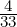
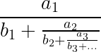
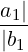
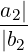
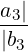
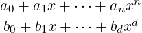

| Up | Next | Prev | PrevTail | Tail |
Authors: Lisa Temme, Wolfram Koepf and Alan Barnes
The division of one integer by another often results in a period in the decimal part. The rational2periodic function in this package can recognise and represent such an answer in a periodic representation. The inverse function, periodic2rational, converts a periodic representation back to a rational number.
where {⟨a1⟩,…,⟨an⟩} is a list of the digits in the integer part,
{⟨b1⟩,…,⟨bm⟩} is a list of the digits in the non-periodic part,
{⟨c1⟩,…,⟨ck⟩} is a list of the digits in the periodic part
and ±⟨b⟩ where ⟨b⟩ is the number base 2 ≤ b ≤ 16,
a minus indicating the rational number ⟨n⟩ was negative.
Normally the operator periodic will not be seen as the output will be prettyprinted as −0.8428571 and 0.03 (base 16) respectively.
Note that periodic2rational will produce the correct rational result when passed a parameter for the periodic part which is not minimal. Similarly, a parameter for the periodic part which consists of all 9’s (or in base b, all (b − 1)’s) is treated correctly although such periodic parts are not canonical and are never generated by calls to rational2periodic.
For example,
periodic2rational({0}, {}, {1, 2, 1, 2});
periodic2rational({0}, {1}, {2, 1});
periodic2rational({0}, {1, 2}, {1, 2, 1, 2});
all produce the same rational result, namely

, as the canonical inputperiodic2rational({0}, {}, {1, 2});
Similarly,
periodic2rational({0}, {}, {9});
periodic2rational({0}, {9}, {9});
periodic2rational({0}, {}, {9, 9, 9, 9});
all produce the same rational result, namely 1, as the canonical input
periodic2rational({1}, {}, {});
Although the operators periodic2rational and rational2periodic work even when ROUNDED is ON, they are best used when ROUNDED is OFF. The input to rational2periodic should not be a rounded number, otherwise an error results.
For example, the input rational2periodic(1/7); will produce the intended periodic representation even with ROUNDED ON. However, the input
a := 1/7; rational2periodic(a);
will result in an error as the simplifier is applied in the assignment and rounds the rational number.
Similarly, although the result of periodic2rational will always be a rational number (represented by a QUOTIENT prefix form), if the simplifier is applied to the result a rounded value will be produced.
A continued fraction (see [JT80]) has the general form
|
a0 +  . |
A more compact way of writing this is as
|
a0 +  + + + …. |
Even more succinctly:
| {a0, {a1,b1}, {a2,b2}, …} |
This is represented in REDUCE as
contfrac(Expression, Rational approximant, {a0,{a1,b1},{a2,b2},…})
The operator cfrac is used to generate a generalised continued fraction expansion of an algebraic expression.
| cfrac(⟨num⟩) |
| cfrac(⟨num⟩,⟨length⟩) |
| cfrac(⟨func⟩,⟨var⟩) |
| cfrac(⟨func⟩,⟨var⟩,⟨length⟩) |
INPUT:
⟨num⟩ is any real number
⟨func⟩ is a function
⟨var⟩ is the function main variable
⟨length⟩ is the maximum number of terms (continuents) to be generated and is
optional.
For non-rational function or irrational number input the ⟨length⟩ argument specifies the number of continuents (ordered pairs, {ai,bi}), to be returned. Its default value is five. For rational function or rational number input the length argument can only truncate the answer, it cannot return additional pairs even if the precision is increased. The default for rational function or rational number input is the complete continued fraction.
For a non-rational function, power series expansion is necessary. The new switch cf_taylor controls whether the TAYLOR or the TPS package is used to produce the power series required. By default this switch is OFF and so the TPS package is normally employed. In most cases the choice is not important, but the TPS option is somewhat better at handling cases where the series expansion is rather sparse. In a few cases TPS may fail to produce a series expansion when TAYLOR succeeds and vice-versa.
For numerical input the default value is exact for rational number arguments whilst for irrational or rounded input it is dependent on the precision of the session. The length argument will only take effect if is smaller than the number of ordered pairs which the default value would return.
If the number of continuent pairs returned does not exceed twelve, the result will usually be pretty-printed as a two element list consisting of the convergent followed by a rendering of the traditional continued fraction expansion. For a larger number of pairs the output is of the second element is printed as a list of pairs. Thus, usually the operator contfrac is not seen in the output.
EXAMPLES
The operator CF is a synonym for the operator continued_fraction.
| cf(⟨num⟩) |
| cf(⟨num⟩,⟨size⟩) |
| cf(⟨num⟩,⟨size⟩,⟨numterms⟩) |
The operator takes the same arguments as the operator continued_fraction: the original number to be expanded ⟨num⟩, an optional maximum size ⟨size⟩ permitted for the denominator of the convergent and an optional maximum number of continuents ⟨numterms⟩ to be generated.
The output is in the same format as that of cfrac described above. As with the operator cfrac output of CF is normally pretty-printed so the operator confract will not be seen.
The operators cf_expression, cf_convergent and cf_continuents are accessors and allow the various parts of a continued fraction object ⟨cf_object⟩ (as returned by any of the operators cf, cfrac, continued_fraction and cf_euler) to be extracted.
These three operators return, respectively, the originating expression of the continued fraction object, the last convergent of the continued fraction, a list of its continuents (that is a list of pairs of partial numerators and denominators).
The operator cf_convergents returns a list of all the convergents of the expansion.
| cf_expression(⟨cf_object⟩) |
| cf_convergent(⟨cf_object⟩) |
| cf_continuents(⟨cf_object⟩) |
| cf_convergents(⟨cf_object⟩) |
EXAMPLES
The operator cf_euler is used to generate a generalised continued fraction expansion of an algebraic expression using a formula due to Leonhard Euler ( [Eul48]).
| cf_euler(⟨func⟩,⟨var⟩) |
| cf_euler(⟨func⟩,⟨var⟩,⟨length⟩) |
INPUT:
⟨func⟩ is a function
⟨var⟩ is the function main variable
⟨length⟩ is the maximum number of continuents to be generated and is optional.
The meaning of the parameters is similar to those of cfrac, but the continued fraction expansion generated will usually be different. Note that unlike cfrac, cf_euler cannot currently generate continued fraction expansion of numbers and for a rational function argument (with a non-constant denominator) the expansion will not be exact.
A number of operators are provided for transforming their continued fraction argument ⟨cf_object⟩ into an equivalent expansion, that is one with exactly the same convergents. They all accept as their single argument any continued fraction object ⟨cf_object⟩. These are:
cf_unit_denominators
converts all partial denominators to 1.
cf_unit_numerators
converts all partial numerators to 1.
cf_remove_fractions
converts the denominators of the partial numerators and partial denominators in the
continuents to 1.
cf_remove_constant
removes the zeroth continuent (if non-zero) absorbing it into the first continuent
pair.
The operator cf_transform is a general purpose function for transforming its continued fraction argument ⟨cf_object⟩ into an equivalent expansion. Unlike the four preceding operators it requires a second argument: a list of multipliers used to modify the partial numerators and denominators of the original expansion.
| cf_transform(⟨cf_object⟩,⟨multiplier-list⟩) |
To understand the operation of cf_transform consider first the special case where ⟨multiplier-list⟩ is a list of the form {1,1,…,1,ln,1,…,1} whose nth element is ln. Only the nth continuent pair {an, bn} and (n+1)th partial numerator an+1 are altered and become {lnan, lnbn} and lnan+1 respectively. For a ⟨multiplier-list⟩ that has more than one non-unit element, the above transformations are applied sequentially from left to right.
If the number of continuent pairs in the ⟨cf_object⟩ is greater than the length of the ⟨multiplier-list⟩, the latter is (in effect) padded with 1’s. Conversely if it is shorter, the surplus elements of ⟨multiplier-list⟩ are ignored.
The operator cf_even_odd splits its continued fraction argument ⟨cf_object⟩ into two continued fraction objects: namely its even and odd parts (in that order) which are returned as a two-element list.
| cf_even_odd(⟨cf_object⟩) |
The convergents of the even part are the even-numbered convergents of the original expansion and those of the odd part are the odd-numbered ones (except the zeroth convergent which is necessarily zero). For the continued fraction expansions generated by the operators cf and cfrac with a numerical first argument ⟨num⟩. The convergents of the even part form a monotonically increasing sequence whilst those of the odd part (after the zeroth) form a monotonically decreasing sequence.
EXAMPLES
The Padé approximant represents a function by the ratio of two polynomials. The coefficients of the powers occuring in the polynomials are determined by the coefficients in the Taylor series expansion of the function (see [BGM96]). Given a power series
| f(x) = c0 + c1(x − h) + c2(x − h)2… |
and the degree of numerator, n, and of the denominator, d, the pade function finds the unique coefficients ai,bi in the Padé approximant
|
 . |
EXAMPLES
| Up | Next | Prev | PrevTail | Front |